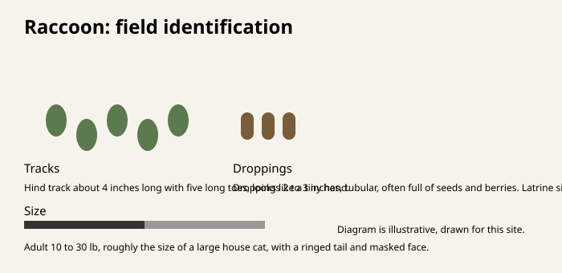

Animal guide - upstate New York
Raccoon Removal in Upstate NY
A raccoon in the attic sounds like a person moving furniture at 2 a.m. Raccoons are strong, clever and stubborn once they pick a den, and upstate New York gives them everything they want: tree canopy for travel, chimneys and soffits for shelter, and garbage for dinner. This page covers how to confirm it is a raccoon, what the law allows in New York, what humane removal actually involves, and what it costs.
What are the signs of a raccoon problem?
- Heavy thumping, walking and dragging sounds after dark that stop by morning
- Chattering, growling or kit cries from the attic, wall or chimney in spring
- A latrine: a flat area of droppings, often on a roof valley, deck or attic floor
- Pried-up soffits, bent vent covers or a torn shingle edge at the roofline
- Trash cans tipped and raided on a regular route through the yard
- Smudge and rub marks, plus muddy hand-like prints, near downspouts and entry points


Hind track about 4 inches long with five long toes, looks like a tiny hand. Droppings 2 to 3 inches, tubular, often full of seeds and berries. Latrine sites repeat in the same spot. Adult 10 to 30 lb, roughly the size of a large house cat, with a ringed tail and masked face.
What damage do raccoons do inside a home?
Raccoons do damage out of proportion to their size. A female denning in an attic tears insulation into a nest, shreds ductwork and flex pipe, and can pull shingles and fascia loose widening her own doorway. The latrine is the expensive part: droppings concentrated in one spot soak insulation and ceiling drywall below, and raccoon roundworm eggs in that waste stay viable in soil and dust for years. Chewed wiring happens too, though less often than with squirrels. Left a full season, a family of raccoons can turn a simple eviction into an eviction plus a partial attic restoration.
How do raccoons behave through the New York year?
Raccoons are nocturnal and range widely at night, then sleep through the day in the den. Females look for den sites from late winter, and kits are born mostly from March through June in New York. A mother with kits is the hardest case: she will fight to get back to them, chew through weak patches, and move the whole family to a second den if she has one. Daytime sightings happen and do not automatically mean rabies, especially in spring when mothers feed longer hours, but an animal that staggers, circles or approaches people needs distance and a call, not a closer look.
The working calendar in upstate NY runs like this. Late winter, females scout dens and entry calls climb. March through June is kit season: every job starts with a young check, and exclusion waits until the family is out together. Summer is repair and sealing season, when attics are empty in daylight hours. October through March brings the cold-weather entry push, as raccoons look for warm dens before snow. A chimney with no cap is an open invitation in every one of those windows.


Are raccoons a health risk to my family or pets?
Raccoons are a rabies vector species in New York, so any bare-handed contact is off the table, and pets should be kept away from a den or latrine. Raccoon roundworm, Baylisascaris, is the quieter risk: eggs shed in latrine droppings can infect people who breathe or swallow contaminated dust during a careless cleanup. That is why latrine cleanup is respirator work with the waste bagged wet, never swept dry, and why contaminated insulation usually comes out rather than being raked back into place.
What does New York law say about raccoon removal?
In New York, raccoons are a rabies vector species and their removal is regulated. Nuisance Wildlife Control Operators work under a NYS DEC licence, and a raccoon taken under a nuisance permit cannot simply be driven across the county and released: state rules restrict transport and relocation of rabies vector species, and many problem raccoons must be euthanised or released on the same property. That legal reality is exactly why eviction plus exclusion is the preferred route here: the animal walks out on its own, stays in its home range, and the sealed house removes the reason it came.
Can I handle raccoon removal myself?
Homeowners can do the attractant work themselves: locking lids, no pet food outside, birdseed cleaned up, tree limbs cut back 6 to 8 feet from the roof. What does not work is sealing a hole on a guess. Seal a mother out in spring and the kits die in the attic, which trades one problem for a worse one within days. Mothballs and ultrasonic gadgets show no reliable effect on raccoons. The eviction itself, one-way doors, live capture and the reunion setup, is licensed work in New York and belongs with a permitted operator.
One last thing on choosing help. Get the inspection findings in writing, with photographs of each entry point, and get removal, sealing and cleanup as separate lines on the estimate. Ask what material closes each hole, because foam and caulk alone are not exclusion. And ask the season question out loud: if the timing is wrong for this species, an honest operator will tell you to wait, and offer the inspection and quote now so the work is ready the week the window opens.
How does humane raccoon removal work, step by step?

Inspect and find every entry point
The visit starts on the roof and in the attic, not at a trap. The operator maps the main entry, the backup exits raccoons always have, latrine sites and whether kits are present, then photographs each point so you see the same evidence.
Check for kits before anything is sealed
In spring the attic is checked for young first. If kits are present the plan changes: the mother is evicted and the kits are placed in a reunion box at the entry, where she collects them and moves them to a backup den herself.
Evict with one-way doors or live capture
A one-way door lets the raccoon leave and locks behind it. Where a door cannot work, live cage capture under the DEC licence is used. Poison is never part of the process, and lethal methods are not the default.
Seal, repair and clean up
Once the attic is confirmed empty, entries are sealed with galvanised steel mesh, metal flashing and chew-proof covers, damaged soffit or fascia is repaired, and latrine waste and ruined insulation are removed and the area disinfected.
In the local data
This is not a theoretical animal for these towns. Observers have logged 632 research-grade iNaturalist observations of the common raccoon (Procyon lotor) across the ten town areas this site covers, and the species was recorded in all 10 of the 10 areas.
Data: iNaturalist, 25 km radius per town, fetched November 2026.
How much does raccoon removal cost?
| Service | Typical range | Notes |
|---|---|---|
| Inspection and entry-point survey | $150-$300 | Often credited toward the work when you proceed. |
| Single-animal humane removal | $300-$600 | One animal, one entry point, straightforward access. |
| Bat exclusion, full home | $800-$2,500 | Colony work: one-way valves, full seal, guano check. |
| Attic cleanup and disinfection | Quoted after inspection | Depends on droppings volume and insulation condition. |
Raccoon jobs most often land in the single-animal band when one adult is evicted and one entry is sealed. A mother with kits, a chimney den, or latrine cleanup with insulation replacement pushes the quote up, and each of those items should appear as its own line on a written estimate.
These are typical market ranges for upstate New York, published so you can sanity-check any quote. They are not a quote for your home: access, entry count, young in the den and cleanup volume move the real number, which is why the inspection comes first and the estimate is written.
Raccoon removal in your town
The method on this page is state-wide, but the animal pressure, housing stock and season are local. These town pages combine the raccoon method with each town's housing, waterways and cost notes, including sub-services like attic, chimney and under-deck work, babies, damage repair and emergencies.
Ithaca Binghamton Poughkeepsie Kingston Newburgh Utica Saratoga Springs Watertown Auburn Elmira
Raccoon removal questions, answered
How do I know it is a raccoon and not a squirrel in my attic?
Timing and volume give it away. Raccoons work at night: heavy thumping, slow walking and dragging sounds, sometimes chattering, that stop by morning. Squirrels are day animals, so scratching and scampering at sunrise and late afternoon points to them instead. Droppings settle it, since raccoon latrine waste is large and clustered, while squirrel droppings are small pellets scattered along runs.
There's a raccoon in my attic. What should I do right now?
Keep people and pets out of the attic and do not try to corner or grab the animal. Note where you hear activity and check, from the ground, for lifted soffits or a damaged vent. Then book an inspection. Avoid sealing anything yourself, because in spring there may be kits inside, and a sealed-out mother will tear a new hole, often a bigger one, trying to get back to them.
Will you separate a mother raccoon from her babies?
No. Separating a mother from her kits is both cruel and counterproductive, because she will damage the home trying to return. The humane method reunites them: kits are placed in a warmed reunion box beside the entry point after the mother is evicted, and she retrieves them one by one and carries them to a backup den, usually the same night.
Can I trap a raccoon myself and release it in the woods?
In New York that is generally not legal for a homeowner to do with a rabies vector species, and it does not work well anyway. Relocated raccoons face unfamiliar territory, no known food or shelter, and high mortality, while your open entry point simply invites the next animal. Licensed operators work under DEC rules, and eviction plus sealing solves the problem at the house, where it started.
What is a raccoon latrine and why does it matter?
A latrine is the shared toilet site raccoons return to, often a flat roof section, a deck corner or one patch of attic floor. It matters because the droppings can carry raccoon roundworm eggs that survive for years and contaminate insulation and the ceiling below. Latrines are cleaned as hazardous waste, with respirators and wet methods, and soaked insulation is removed rather than left in place.
How long does raccoon removal take from first call to sealed house?
Most straightforward evictions run two to five days: inspection and door fitting on day one, a night or two for the animal to leave, then confirmation and sealing. A mother with kits can take a week, because the reunion step runs on her schedule. Cleanup and insulation work, when needed, adds a separate visit after the house is confirmed empty.
Is raccoon removal ever free?
Sometimes, in a narrow set of cases. County animal control or the DEC typically handles a sick, injured or rabies-suspect raccoon, or an animal in a public space, at no charge to the resident. Evicting a raccoon from your attic or chimney is different work: it is private property, done by a licensed operator, and it is paid, typically $300 to $600 for a single animal after inspection. This site never promises free removal.
Do you use poison for raccoons in the attic or around the home?
No. Poison is not part of humane raccoon work on this site, and for good reason. A poisoned animal usually dies somewhere unreachable, in a wall, a flue or under a floor, and the entry point stays open for the next animal anyway. Eviction, one-way doors where they fit, live capture where they do not, and then sealing solves the problem at the structure, which is where it actually lives.
Will you seal the entry points, or just remove the animal?
Sealing is the point of the job, and any quote that only covers removal is half a quote. The process here runs in order: inspect and map every entry, evict or capture the raccoons, confirm the space is empty, then close each opening with materials the animal cannot chew, dig or pry through. Removal without exclusion is a short rental of an empty attic, and the next tenant rarely waits a full season to move in.
Are wildlife removal operators licensed and insured in New York?
They should be, and you can check before anyone climbs your roof. Nuisance Wildlife Control Operators in New York work under a NYS DEC licence, carry insurance for roof and attic work, and should give you the licence details on request. The checklist is simple: licence, insurance, a written estimate with line items, and a method that starts with inspection and ends with sealing. An operator who cannot produce the first two has not earned the job.
How fast can a wildlife technician get to my home?
Response time depends on where in upstate New York you are and what the raccoon is doing. An animal in the living space, a chimney or a wall void is treated as urgent and usually gets a same-day or next-day response across the towns this site covers. Attic evictions and barrier work are booked as inspections first, normally within a few days, and the written quote follows the inspection, not a guess over the phone.
How much does raccoon removal cost in upstate New York?
The canonical bands on this site apply to every town: inspections run $150 to $300 and are often credited toward the work, a single-animal humane removal is typically $300 to $600, full bat exclusion runs $800 to $2,500, and attic cleanup is quoted after inspection because it depends on what the animals left behind. Raccoon jobs most often land in the single-animal band when one adult is evicted and one entry is sealed. A mother with kits, a chimney den, or latrine cleanup with insulation replacement pushes the quote up, and each of those items should appear as its own line on a written estimate.